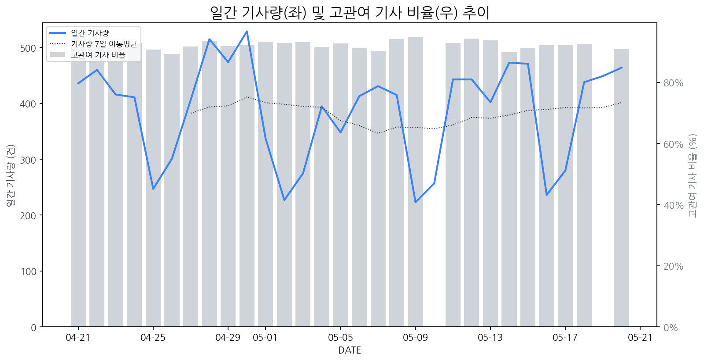

1
시장 활동 지표
기사량 추세 & 이상 징후 탐지
시장의 '전체 기사량'이 평소보다 비정상적으로 급증했는지(Spike)를 차트로 확인하고, LLM이 분석한 급등의 핵심 원인을 파악할 수 있음

고관여 기사란? 산업 연관 키워드로 수집된 기사들 중 디스플레이 키워드에 가중치를 반영하여 도출된 관련성 높은 기사
수집된 기사 수 (2026-05-20)
464
+15% WoW
기사량 변동 수준 (7일 이동평균 대비)
±6.7% 이하
2
오늘의 키워드
급격한 관심 ↑, 주목해야 할 키워드
1
모니터
+11.2σ
삼성·LG의 차세대 고해상도·OLED 게이밍 모니터 신제품 출시 및 완판 행진이 관심 집중의 핵심입니다.
Related Metrics
금일 언급량: 53, 전일 대비: +52
Interpretation
프리미엄 모니터 시장 성장 신호
Next Step
'모니터' 관련 상세 기사 및 경쟁사 반응 모니터링
2
삼성전자
+7.6σ
삼성전자가 업계 최초 6K OLED 게이밍 모니터를 출시하며 프리미엄 시장 공략을 강화했습니다.
Related Metrics
금일 언급량: 76, 전일 대비: +47
Interpretation
프리미엄 시장 리더십 강화
Next Step
핵심 토픽 'Foldable_Display_Topic' 관련 신호입니다. 3번 섹션(키워드 감성분석)에서 해당 토픽의 감성 변동을 교차 확인하세요.
3
lg전자
+3.1σ
LG전자 39형 5K2K 올레드 게이밍 모니터 출시 초기 완판 행진이 호재로 작용했습니다.
Related Metrics
금일 언급량: 26, 전일 대비: +19
Interpretation
프리미엄 OLED 경쟁력 강화
Next Step
'lg전자' 관련 상세 기사 및 경쟁사 반응 모니터링
4
올레드
+2.7σ
LG전자의 39형 5K2K 올레드 게이밍 모니터의 폭발적인 초기 판매 완판이 흥행을 견인했습니다.
Related Metrics
금일 언급량: 6, 전일 대비: +6
Interpretation
OLED 게이밍 시장 성장 신호
Next Step
'올레드' 관련 상세 기사 및 경쟁사 반응 모니터링
3
실시간 Risk 키워드
경계해야 할 시그널 탐지
특정 토픽의 부정 감성 점수가 급등할 때 이를 즉시 탐지하고, "근거 기사" 링크를 통해 리스크의 실체를 빠르게 파악할 수 있음
키워드 분석 결과, 오늘은 걱정할 만한 하락 신호가 없습니다. (부정 언급량 변화: +1.5σ 이내)
4
주요 이벤트 모니터링
실시간 산업 동향 파악을 위한 주요 활동
최근 발생한 주요 기업들의 신제품 출시, 투자 등 주요 이벤트를 제공하여 매일 경쟁사 동향을 확인할 수 있음
LG전자가 출시한 39형 5K 및 2K 올레드 게이밍 모니터 신제품이 시장에서 조기 완판되는 성과를 거두었습니다. 이는 고해상도 및 고성능 올레드 게이밍 모니터에 대한 소비자 수요가 높음을 시사합니다.
Impact
이 이벤트는 프리미엄 게이밍 모니터 시장에서 올레드 패널 채택 확대와 함께, LG전자의 경쟁력 강화를 보여주며 경쟁사들에게도 고성능 올레드 제품 개발 및 마케팅 강화의 필요성을 제기할 수 있습니다.
Next Step
타 디스플레이 제조 기업은 올레드 기술의 게임 시장 적용 확대 가능성을 주시하며, 차별화된 프리미엄 게이밍 모니터 라인업 구축 및 기술 개발에 집중해야 합니다.
삼성전자가 6K 해상도의 OLED 게이밍 모니터를 출시하며 OLED 패널 기술과 초고주사율 성능을 강화했습니다. 이는 기존 고성능 게이밍 모니터 시장에 새로운 기준을 제시할 것으로 보입니다.
Impact
이번 삼성전자의 신제품 출시는 OLED 게이밍 모니터 시장의 성장을 가속화하고, 경쟁사들에게 기술 개발 및 제품 라인업 확대를 촉진하는 계기가 될 것입니다.
Next Step
경쟁 디스플레이 제조 기업들은 OLED 기술 경쟁력 강화 및 차별화된 초고주사율 기술 개발을 통해 시장 점유율을 유지하거나 확대하기 위한 전략을 모색해야 합니다.
BOE가 기존 8.5세대 LCD 생산 라인을 WOLED 생산으로 전환하며 IT OLED 시장으로 사업 영역을 확장했습니다. 이는 BOE의 OLED 생산 능력 증대와 IT 기기 시장에서의 경쟁력 강화 의지를 보여줍니다.
Impact
IT OLED 시장의 공급 확대 및 경쟁 심화로 이어져, 관련 부품 공급망 및 가격 구조에 변화를 가져올 수 있습니다.
Next Step
경쟁사들은 BOE의 IT OLED 시장 진출에 대응하여 자체 기술 개발 가속화, 원가 경쟁력 확보, 차별화된 제품 포트폴리오 구축을 고려해야 합니다.
삼성전자가 '갤럭시 글래스'를 출시하며 기존 메타의 독주 체제를 깨고 '포스트 스마트폰' 시장의 패권을 노리고 있습니다. 이는 스마트폰 이후의 차세대 디바이스 시장에서 삼성의 입지를 강화하려는 전략입니다.
Impact
이 이벤트는 AR/VR 글래스 및 관련 디스플레이 기술 시장의 성장을 가속화하고, 디스플레이 패널 제조사들에게 새로운 성장 기회를 제공할 것으로 예상됩니다.
Next Step
디스플레이 제조 기업은 AR/VR 글래스에 최적화된 고해상도, 저지연, 저전력 디스플레이 기술 개발 및 공급망 확보에 집중해야 합니다.
구글은 연례 개발자 행사 '구글 I/O 2024'에서 인공지능(AI) 인프라 투자 확대와 개인 비서 기능 강화를 핵심으로 발표했습니다. Gemini 모델의 진화와 AI가 통합된 다양한 제품 및 서비스 로드맵을 공개했습니다.
Impact
AI 기능 강화 및 확산은 고성능, 고화질 디스플레이 수요를 증대시키고, AI 기반의 스마트 디스플레이 및 엣지 디바이스 시장 성장을 가속화할 것으로 예상됩니다.
Next Step
AI 연산 및 시각화 처리에 최적화된 차세대 디스플레이 기술 개발 및 관련 기업과의 협력 방안을 모색해야 합니다.